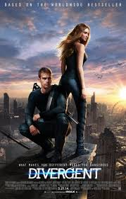

Crepúsculo
A estudante Bella Swan conhece Edward Cullen, um belo mas misterioso adolescente. Edward é um vampiro, cuja família não bebe sangue, e Bella, longe de ficar assustada, se envolve em um romance perigoso com sua alma gêmea imortal.
ALUGARElenco do filme:
-
Kristen Stewart
-
Robert Pattinson
-
Taylor Lautner
-
Ashley Greene
Divergente
Na futurística cidade de Chicago, ao completar 16 anos, Beatrice precisa escolher entre as diferentes facções em que a cidade está dividida. Cada uma representa um valor diferente e, ao contrário de sua família, a jovem opta pela facção dos destemidos, a Audácia. Ela então se torna Tris e inicia uma jornada para afastar seus medos e descobrir quem realmente é. Durante essa jornada, acaba conhecendo o jovem Quatro, um rapaz experiente que tem o dom de intrigá-la e de encantá-la ao mesmo tempo.
ALUGARElenco do filme:
-
Shailene Woodley
-
Theo James
-
Miles Teller
-
Ansel Elgort
Sem Limites

Encarando o desemprego e a rejeição de sua namorada, o escritor Eddie Morra tem certeza que não tem mais futuro. Mas tudo muda quando um velho amigo lhe dá uma droga que melhora as habilidades mentais. Viciado nesta química ainda não testada, Eddie chega ao topo do mundo financeiro e chama a atenção de um magnata que pretende usá-lo para fazer fortuna. Mas terríveis efeitos colaterais e a diminuição do estoque da droga ameaçam o colapso de Eddie
ALUGARElenco do filme:
-
Bradley Cooper
-
Robert De Niro
-
Abbie Cornish
-
Andrew Howard